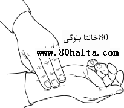

كېيىنكى يازما
كېيىنكى يازما
تومۇر تۇتۇپ كېسەلگە دىئاگنۇس قويغىلى بولامدۇ؟
ئاپتور:Birzat ۋاقتى:2010-06-09


80خالتا بلوگ ئىلاۋىسى: تومۇر تۇتۇش-قەدىمكى كىشىلەرنىڭ ئۇزاق مۇددەتلىك داۋالاش ئەمەلىيەتلىرى جەريانىدا توپلىغان مول تەجىربىلىرىنىڭ يەكۈنى بولۇپ ، ئۇيغۇر تېۋىپلىرىنىڭ كېسەللىكنى تونۇشتىكى موھىم ئۇسۇللىرىنىڭ بىرى. ئۇ خىلىت، قۇۋۋەتلەر ۋە مىزاجدىكى ئۆزگىرىشلەرگە توغرا باھا بىرىشتە بەلگۈلۈك موھىم ئەھمىيەتكە ئىگە. ئەمما تومۇر تۇتۇش نوقۇل ھالدىكى ھەممە كېسەللىكنى بىلگىلى بولىدىغان ئاساسى ۋاستە ئەمەس پەقەت كېسەللىككە توغرا دىئاگنوس قويۇشتىكى موھىم ئۇسۇللارنىڭ بىرى. خوتەندە ئۇزۇن يىل تېبابەت بىلەن شۇغۇللانغان تەجىربىلىك پىشقەدەم تېۋىپ-ھۆكۈمالارمۇ ئاۋۋال بىمارنىڭ كېسەللىك زارىنى ئاڭلىۋېتىپ ئاندىن تومۇردىكى ئالامەتلەر بىلەن بىمارنىڭ چىراي ئىپادىسى، تېرە رەڭگى، كۆز ئېقى، لەۋ-كالپۇك، تېنىقنىڭ پۇرىقى دېگەنلەرگە ئالاھىدە دېققەت قىلىدۇ ۋە شۇلارغا مۇناسىۋەتلىك زۆرۈرۈ سۇئاللارنى سوراپ ئاندىن دېئاگنۇسنى مۇقىملاشتۇرىدۇ. زۆرۈر كەلسە زامانىۋى تەكشۈرۈش ئۈسكۈنىلىرىگە مۇراجىئەت قىلىدۇ. كېسەلدىن سورىماي تۇرۇپ تومۇر تۇتۇپلا كېسەلگە دېئاگنۇس قويۇپ دورا بىرىش توغرا ئەمەس دەپ قارايدۇ. قەشقەر تەرەپلەردە <<بىچاۋ>>، <<سېتى>> دېگەندەك << تېۋىپلىق ئۇنۋان >> ناملىرىنىڭ كۆپىيىشىگە ئەگىشىپ بەزى كىشىلەردە كېسەللىك ئالامەتلىرىنى تېۋىپقا ئېيتىشتىن ئاۋۋال تېۋىپنىڭ ئۆز تومۇرىنى تۇتۇپ كېسىلىنى تېپىپ بىقىشىنى تەلەپ قىلىۋالىدىغان ناتوغرا قىلمىشلار بار. بۇنىڭ ئارقىسىغا يوشۇرۇنغىنى <<بىمار دېمىسىمۇ تومۇر تۇتۇپ كېسەلنى تاپالىغان تېۋىپ ئۇستا تېۋىپ، تاپالمىغىنى بىلمەيدىغان ياكى ساختا تېۋىپ >> دەيدىغان قاراشنىڭ شەكىللىنىپ قىلىشىدىن بولسا كېرەك. ئەمەلىيەتتە بۇ خىل قاراش بىمارنىڭ كېسەللىكىگە قويۇلغان دېئاگنۇسنىڭ توغرا بولىشىغا توسالغۇ بولىدۇ. شۇڭا بىمارلار تېۋىپلارنىڭ تومۇر تۇتۇپ كېسەل كۆرۈشىگە ئىلمى قارىشى كېرەك. خالىسىڭىز بۇ تېمىنىڭ تەپسىلاتىنى كۆرۈپ بېقىڭ، قېنى سىزمۇ تومۇر تۇتالامسىزكىن؟!!!
__________ بىرزات
ئادەم بەدىنى ئىچكى ۋە تاشقى دۇنيا بىلەن زېچ باغلىنىشلىق بولغان مۇرەككەب بىر پۈتۈن جانلىق جىسىم بولغاچقا، كېسەللىكلەرنىڭ ئالامەتلىرى خىلمۇ خىل بولىدۇ. قەدىمدىن تارتىپ ئۇيغۇر تېۋىپلىرى ئىلمى تەشخىس ( دىئاگنوس ئىلمى) جەھەتتە نۇرغۇن ئەمگەك سىڭدۈرگەن. كۆپلىگەن قىممەتلىك تەجىربىلەرنى يەكۈنلەپ بىر يۈرۈش سىستېمىلاشقان قائىلدىلەرنى بەرپا قىلغان.
ئۇيغۇر تىبابىتىدە كېسەللىك تونۇش ئىلمىنىڭ بىر - بىرىگە زېچ مۇناسىۋەتلىك بەش تۈرلۈك تەكشۈرۈش ئۇسۇلى بار.
1. قاراپ تەكشۈرۈش،2. تىڭشاپ تەكشۈرۈش، 3.سوراپ تەكشۈرۈش،4.تۇتۇپ تەكشۈرۈش،5.قوشۇمچە تەكشۈرۈشلەر( چوڭ-كېچىك تەرەت، خەپرۈك ۋە قۇسقان ماددىلارنى تەكشۈرۈش دېگەندەك).
بىزنىڭ سۆزلىمەكچى بولغىنىمىز كېسەللىكلەرنى ئېنىقلاشتىكى موھىم ئۇسۇللارنىڭ بىرى بولغان تۇتۇپ تەكشۈرۈش ( تومۇر تۇتۇش) بولىدۇ. تومۇر تۇتۇش-قەدىمكى كىشىلەرنىڭ ئۇزاق مۇددەتلىك داۋالاش ئەمەلىيەتلىرى جەريانىدا توپلىغان مول تەجىربىلىرىنىڭ يەكۈنى بولۇپ ، ئۇيغۇر تېۋىپلىرىنىڭ كېسەللىكنى تونۇشتىكى موھىم ئۇسۇللىرىنىڭ بىرى. ئۇ خىلىت، قۇۋۋەتلەر ۋە مىزاجدىكى ئۆزگىرىشلەرگە توغرا باھا بىرىشتە بەلگۈلۈك موھىم ئەھمىيەتكە ئىگە. ئەمما تومۇر تۇتۇش نوقۇل ھالدىكى ھەممە كېسەللىكنى بىلگىلى بولىدىغان ئاساسى ۋاستە ئەمەس پەقەت كېسەللىككە توغرا دىئاگنوس قويۇشتىكى موھىم ئۇسۇللارنىڭ بىرى.
تومۇر ، بىلەيزۈك بېغىشىدىكى شىريان تومۇردىن تۇتۇلىدۇ. بۇ جايدىكى گۆش قاتلاملىرى نېپىز، تۇتۇپ بىلىشكە ئاسان بولۇپ ، كىسەل كىشىمۇ ئۇياتلىق ھېس قىلمايدۇ ۋە ئارتۇقچە قىيىنچىلىق تۇغدۇرمايدۇ. شۇڭا بۇنى قەدىمكى ئۇستازلىرىمىز تومۇر تۇتۇپ تەكشۈرۈشكە ئەپلىك تومۇر دەپ ئاتىۋالغان. باشنىڭ تومۇرىدىنمۇ ئاسان بىلگىلى بولىدۇ. ئەمما كۆپ ئىشىلتىلمەيدۇ. تومۇر تۇتۇشنى ئۈگۈنۈشتە ئالدى بىلەن مىزاجى مۆتىدىل ، بەدىنى ساغلام كىشىلەرنىڭ تومۇرىنى تۇتۇپ ، تومۇر سىلىش ئەھۋاللىرىنى كۆپ سىناپ ئۈگەنگەندىن كىيىن ئۇنى باشقا كېسەل كىشىلەرنىڭ تومۇرلىرى بىلەن سېلىشتۇرۇپ ئۈگۈنىشى لازىم.
تىۋىپ باش بارمىغىدىن باشقا 4 بارمىقىنى كېسەلنىڭ تومۇرى ئۈستىگە تەكشى قويۇپ تۇتۇشى، كېسەل كىشى قولىنى تۈز تۇتۇپ بېرىشى لازىم. تىۋىپ ئالدى بىلەن تومۇرنىڭ سۇس ياكى كۈچلۈك ئىكەنلىكىنى بايقاپ كۈچلۈك بولسا ئوتتۇرھال، ئاجىز بولسا يىنىك كۈچ بىلەن تۇتۇشى كېرەك. كېسەللىك مۇرەككەب بولسا ئۇزۇنراق تۇتۇپ قانداق ئۆزگىرىش بارلىغىنى ئېنىق بىلىش لازىم. چۈنكى ئۇزۇنراق تۇتۇپ تۇرغاندا تومۇر ئۆز ئەسلىگە قايتىدۇ.
تومۇرنىڭ چوڭ كىچىكلىكى، ئىسسىق -سوغۇقلىقى، بىر توختاپ بىر سېلىشى ياكى ئارقا -ئارقىدىن سېلىشى قاتارلىق ئەھۋاللارنى ئېنىق بىلگۈچە تۇتۇش لازىم. تومۇر تۇتۇشنىڭ ئادەتتىكى مۇددىتى تومۇر 12 قېتمدىن 30 قېتىم ئۇرغۇچە بولسا بولىدۇ. چۈنكى تومۇر 12 قېتىم ئۇرغۇچە قاتتىقلىقتىن يۇمشاقلىققا ياكى يۇمشاقلىقتىن قاتتىقلىققا ئالمىشىپ بولالمايدۇ. بەزى تومۇرلار 8-10 قېتىم ئوبدان سېلىپ 11-12 قېتىمدا بىرنى تاشلايدۇ. شۇڭا 12 قېتىمدىن ئارتۇق ئۇرغۇچە تومۇرنى تۇتۇشنى قولدىن بەرمەسلىك لازىم. تومۇرنى تۇتقاندا كېسەل كىشى قورقۇش، خوش بولۇش، غەم-ئەندىشە قىلىش، ھېرىپ چارچاش، مۇنچىغا بىرىش، كۆپ ئۇخلاش،ئۇيقۇسىزلىق ،تولا ئاچلىق ۋە توقلۇق، غەزەپلىنىشكە ئوخشاش ئىشلاردىن خالى بولغاندا تۇتۇش لازىم. مىزاج، ياش، جىنسى پەرىقلەر ۋە تۇرۇشلۇق يۇرت-ئىقلىم، ئۇ جايلارنىڭ ھاۋا كىلىماتى قاتارلىقلارنىڭ تومۇر ھەركىتىگە تەسىر قىلىدىغانلىقىنى نەزەردىن ساقىت قىلماسلىق كىرەك.
تومۇرنىڭ تۈرلىرى
ئۇزۇن ۋە قىسقا تومۇر:
(1) ئۇزۇن تومۇرنىڭ ھەركىتى تېۋىپنىڭ بارماقلىرىغا تەبئىي ھالەتتىن ئۇزۇنراق سېزىلىدۇ. بۇ كۆپۈنچە ھارارەتنىڭ ئىشىپ كەتكەنلىكىدىن دېرەك بېرىدۇ.
(2) قىسقا:بۇ ، ئۇزۇن تومۇرنىڭ ئەكسى بولۇپ ، تومۇرنىڭ ھەركىتى تەبئىي ھالەتكە نىسبەتەن قىسقىراق سېزىلىدۇ. بۇ ، بەدەن ھارارىتىنىڭ تۆۋەنلىگىدىن دېرەك بېرىدۇ.
(3) مۆتىدىل:بۇ تومۇرنىڭ ئۇزۇن -قىسقىلىقى، يۇقۇرقى ئىككى خىل تومۇرنىڭ ئوتتۇرسىدا بولۇپ تومۇر ھەركىتى قولغا ئوتتۇرھال بىلىنىدۇ. بۇ كۆپۈنچە مىزاجنىڭ ياخشىلىقى ۋە 4 خىل كەيپىياتنىڭ نۇرماللىقىنى بىلدۈرىدۇ.
توم ۋە ئىنچىكە تومۇر:
(1) توم ياكى كەڭ: تومۇر ھەركىتى تومراق سېزىلىدۇ. بۇ ، بەدەندە سۇيۇقلۇقنىڭ كۆپەيگەنلىكىدىن دېرەك بېرىدۇ. كۆپرەك بەلغەم مىزاجلىق ئادەملەردە كۆرىلىدۇ.
(2) ئىنچىكە ياكى تار: پۈتۈن تومۇر بويچە قاننىڭ دولقۇنى تىۋىپنىڭ قولىغا ئىنچىكە سېزىلىدۇ. بۇ كۆپۈنچە بەدەندە سۇيۇقلۇق ئازىيىپ، قوتۇقلۇق غەلبە قىلغانلىقتىن دېرەك بېرىدۇ.
(3) مۆتىدىك: تومۇر ھەركىتى توم ۋە ئىنچىكىلىكتە تەكشى بولىدۇ. بۇ ، بەدەندە كەيپىياتنىڭ ئوتتۇرھاللىغى ۋە مىزاجنىڭ نۇرماللىغىنى بىلدۈرىدۇ. بۇ ، توم بىلەن ئىنچىكە تومۇر ئارلىقىدىكى مۆتىدىللىكتۇر.
لەيلىمە ۋە چۆكمە تومۇر:
(1)ئۈستۈن: تومۇر ھەركىتى تەبئىي سېزىلىش ھالىتىگە قارىغاندا ئۈستۈن كۆتۈرلۈپ لەيلىگەندەك سېزىلىدۇ. بۇ كۆپۈنچە ھارارەتنىڭ ئۈستۈنلىگىنى بىلدۈرىدۇ.
(2) پەس: پۈتۈن تومۇرچۇڭقۇر ۋە پەسلەپ كەتكەندەك سېزىلىدۇ. بۇ كۆپۈنچە ھارارەتنىڭ تۆۋەنلەپ كەتكەنلىكىنى بىلدۈرىدۇ.
(3) مۆتىدىل: تومۇر ھەركىتى ئۈستۈن ۋە تۆۋەنلىكتە تەكشى بولۇپ، بەدەن ھارارىتى ئۆلچەمگە لايىق ئىكەنلىكىدىن دېرەك بېرىدۇ. بۇ ئۈستۈن ۋە پەسلىككە ئېيتىلغان مۆتىدىللىكتۇر.
يۇقۇرقىلار تىۋىپنىڭ بارماقلىرىغا قىزىل قان تومۇرىنىڭ كېڭىيىش - تارىيىش ھەركەتلىرىدە بىلىنىدىغان بەلگىلەر بولۇپ، ئۇلار تۆۋەندىكىچە پەرقلىنىدۇ.
(1) ئۇزۇن تومۇر ھەركىتى 3 بارماق ئاستىدا سېزىلىدۇ.
(2) قىسقا تومۇر ھەركىتى پەقەت بىر بارماق ئاستىدا سېزىلىدۇ.
(3)كەڭ (توم)تومۇر ھەركىتى بارماق ئۇچىغا تومۇر كەڭ سېزىلىدۇ.
(4) ئىنچىكە تومۇر ھەركىتى كەڭنىڭ ئەكسىچە سېزىلىدۇ.
(5) ئۈستۈن تومۇر ھەركەت قىلغاندا تېرە تەرەپكە كۆتۈرلۈپ ھەركەت قىلىدۇ.
(6) پەس تومۇر گۆش ئىچىگە چۈشۈپ ھەركەت قىلىدۇ.
مەنبە: ئۇيغۇر تېبابەت قامۇسى
[Birzat بۇنى 2011-04-25 08:58 PM دە تەھرىرلىدى]
يازما مەنبەسى: بېكەت ئەسىرى
نەقىل ئۇقتۇرۇشى: بارلىق نەقىللەر | بۇ يازمىنى نەقىل ئالىمەن
خەتكۈش: تومۇر تۇتۇش
مۇناسىۋەتلىك يازمىلار:
يازما مەنبەسى: بېكەت ئەسىرى
نەقىل ئۇقتۇرۇشى: بارلىق نەقىللەر | بۇ يازمىنى نەقىل ئالىمەن
خەتكۈش: تومۇر تۇتۇش
مۇناسىۋەتلىك يازمىلار:
ئىنكاس: 2 | نەقىل: 0 | كۆرۈلگىنى: -
مەن بۇلتۇر 5- ئايدا خوتەنلىك بىر دوستۇمنى ئىلىپ يانلىرىغا بارغان سىلى ئۇنىڭدىن ئۇزىدە قانداق ئالامەت بارلىقىنى سورغاندا ئۇ قىسقىغىنا جاۋاپ بىرىپلا توختىغان . بىز قايتىپ چىققاندىن كىيىن نىمىشقا تەپسىلى دىمىگەنلىكىنى سورسام ئۇ خوتەندە تىۋىپلار تومۇر تۇتسا بىزدىن قەيەرىمىز ئاغرىيدىغانلىقىنى سورىمايلا كىسەلنى تاپالايتى، بۇ تىۋىپ ئۇنداق ئەمەسكەن دىگەن . ئەسلى مۇنداق دىسىلە .
ئىنكاس يوللاش
تومۇر تۇتقاندا چوقۇم تۆت بارماقنىڭ ھەممىسىنى قويامدۇق؟ ئۈستىدىكى رەسىمدە ئۈچ بارماقنى قويغان ھالەت باركەن،،،مەنمۇ تۆت بارمىقىمنى قويۇپ سىناپ باققان ،لېكىن چىمچىلاق بارماقتا ھېچقانداق سېزىم يوق،نۇرغۇن قېتىم سىنىساممۇ يەنىلا شۇنداق.